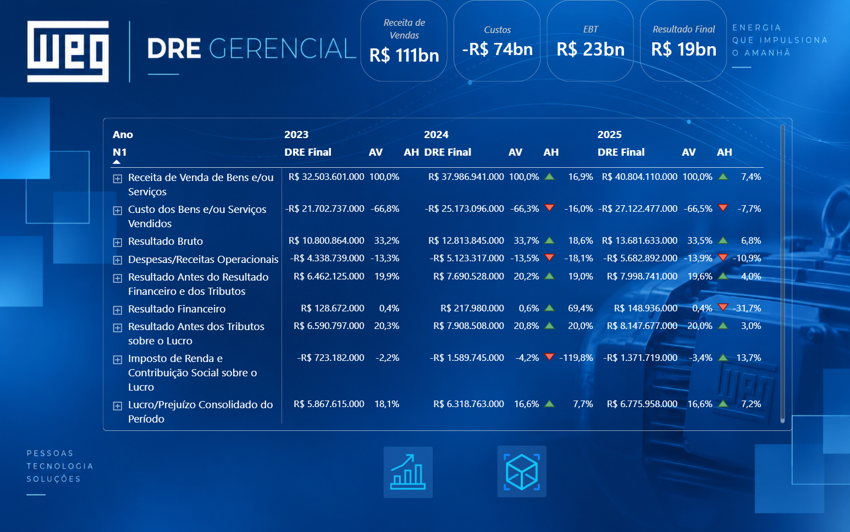
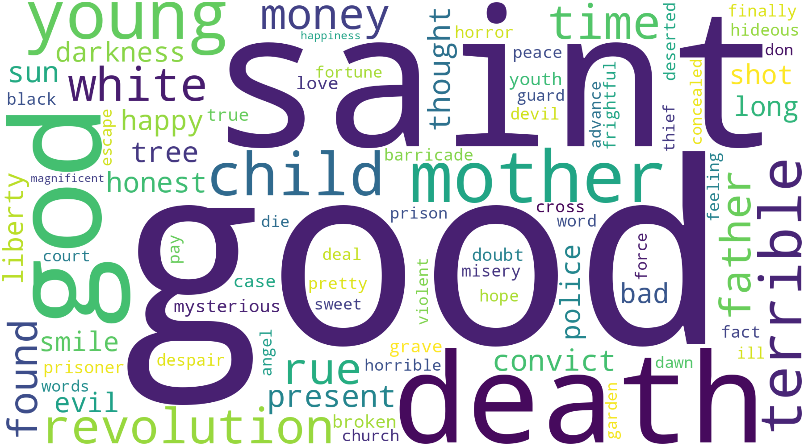
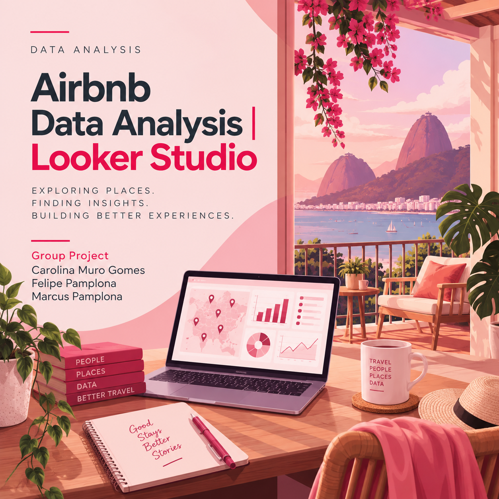

Engineering & Operations
Technical experience in complex and high-responsibility environments.
Data Analytics · Business Intelligence · Business Analysis
Turning complex challenges into smart, data-driven solutions.
Data Analyst with a multidisciplinary background in engineering, business management, and team leadership. I combine analytical thinking, creativity, and storytelling to uncover insights and deliver meaningful results.
About
My background brings together military service in the Brazilian Navy, marine engineering, business management, and leadership in high-responsibility environments.
Today, I apply this multidisciplinary perspective to data analytics, business intelligence, and creative, data-driven problem-solving. I enjoy turning complex information into clear, actionable stories.
After completing Le Wagon’s Data Analytics Bootcamp in 2026, I continue developing independent projects while pursuing a Technology Degree in Data Science at UNINTER.
Key Pillars
Technical experience in complex and high-responsibility environments.
Python, SQL, BI, visualization, modeling and machine learning.
Leadership, communication, coordination and adaptability.
Selected Projects
FINANCIAL ANALYTICS & BUSINESS INTELLIGENCE
From financial statements to interactive decision support.
A Power BI solution analyzing WEG S.A.’s income statement (DRE) across 2023–2025, with financial performance indicators and scenario analysis.
Built a management income statement, a financial analysis dashboard, and an interactive What-if simulator for revenue, costs, expenses, financial results, and taxes.

Literary Data Analysis
From a literary classic to interactive insights.
An interdisciplinary project exploring Victor Hugo’s Les Misérables through characters, geography, historical events, and emotional patterns, using a curated relational dataset and AI-assisted extraction.
Interactive visualizations reveal character journeys, geographic connections, and narrative patterns. Presented at Le Wagon Demo Day in October 2026.
Presented at Le Wagon Demo Day · October 2026

STATISTICAL DATA ANALYSIS
A statistical analysis of Olist ecommerce data exploring how shipping performance relates to customer satisfaction.
The project combines descriptive analysis, correlation analysis and hypothesis testing to compare customer ratings across delivery performance and identify actionable business insights.
BUSINESS INTELLIGENCE & DATA VISUALIZATION
An interactive Airbnb analysis developed to investigate the factors associated with rental performance across guest reviews, pricing, availability and seasonality.
Using SQL, BigQuery and Looker Studio, the project explores host response behavior, pricing patterns and booking activity, translating the results into business insights and actionable recommendations.
Group project developed at Le Wagon.

Technical Skills
Python
R
SQL
Google Sheets
Excel
Power BI
Looker Studio
Plotly
Matplotlib
BigQuery
dbt
Power Query
Machine Learning
APIs
Git
GitHub
VS Code
Insomnia
Background
2026 — Present
UNINTER · Le Wagon · Independent Projects
Pursuing a Data Science degree at UNINTER while developing hands-on analytics projects using Python, SQL, machine learning, and data visualization.
2021 — 2026
Tidewater / Sapura / Bram Offshore
Operated and monitored complex marine engineering systems in offshore environments, analyzing operational parameters and coordinating work within multidisciplinary teams.
2020 — 2021
Transpetro — Petrobras Transporte S.A.
Supported engine-room operations, equipment monitoring and preventive maintenance aboard oil and LPG tankers.
2016 — 2018
Military Service & Officer Training · EFOMM
Served in the Brazilian Navy during officer training, combining military duties, platoon leadership, and operational responsibilities.
2026
Le Wagon — Batch #2295
2026
Google / Coursera
2026 — 2029 · In progress
UNINTER — Centro Universitário Internacional
2016 — 2018
EFOMM — CIAGA
Languages
Portuguese — Native
English — Advanced